- no codes
- not too technical
- hopefully interesting
- unfortunately in english
- コードなし
- 技術的に簡単
- 面白いかも
- thanks @kovensky for the japanese translation
みんスト
Preface
A.I.
(Artificial "Intelligence")
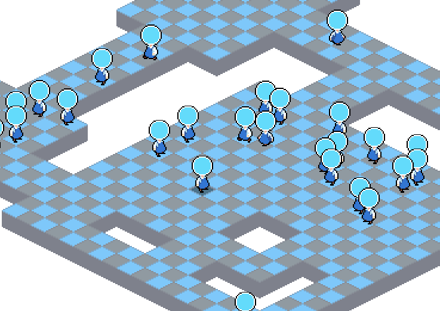
Movement
Individual pathfinding of mobs
各モブの経路発見
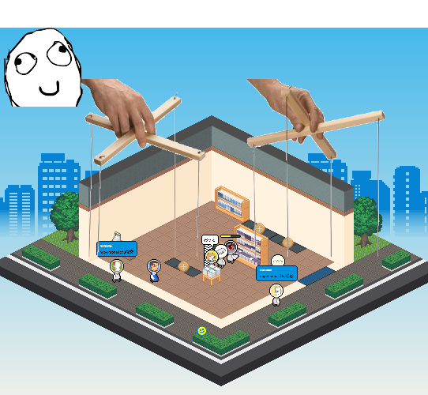
Instead of a manager overlooking and coordinating mob movements
マネージャーの監視と協同じゃなくて、
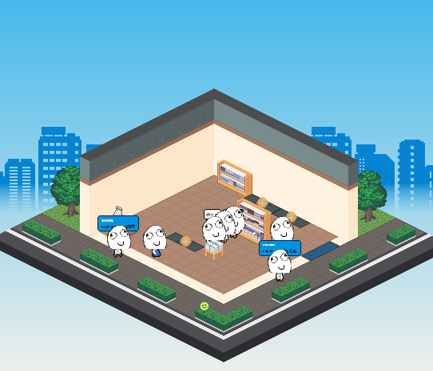
Each mob has its own "intelligence" to decide what to do
各モブは自分の「知能」で考えて道を決める
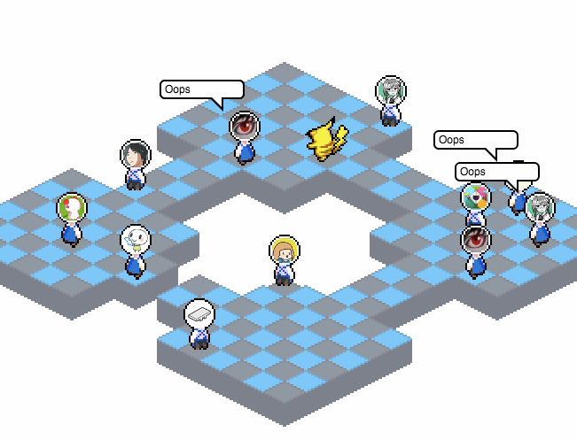
This creates silly (but otherwise very realistic) behaviours
これでいろんな面白い（だがリアル的）な動きが発生する

Very realistic
リアルを感じる
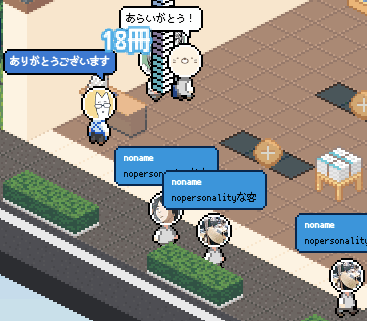
Paths obtained from the pathfinder is also cached to reduce CPU load.
Here we can see customers going around empty space because the space was occupied at the time of pathfinding. 経略発見の結果は、CPUを重くしないためキャッシュされる
発見時に空だったスペースは客が行こうとしない
Here we can see customers going around empty space because the space was occupied at the time of pathfinding. 経略発見の結果は、CPUを重くしないためキャッシュされる
発見時に空だったスペースは客が行こうとしない
Decision making
Each mob has its own thought process to decide what to do
各モブは自分で考えて自分の意思を決める

When a mob's objective queue is empty, one is generated depending on the situation.
A customer mob may look for a bookshelf to browse or decide to go home.
A staff mob will look for a bookshelf to restock. モブがやりたいことがない時、適切な目的が決められる
客さんは本棚を探すか、お家に帰るか
店員さんは補給する本棚を探す
A customer mob may look for a bookshelf to browse or decide to go home.
A staff mob will look for a bookshelf to restock. モブがやりたいことがない時、適切な目的が決められる
客さんは本棚を探すか、お家に帰るか
店員さんは補給する本棚を探す
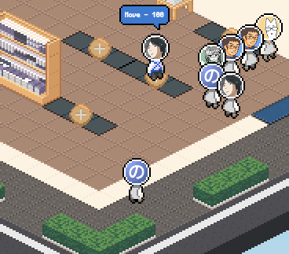
An objective in the objective queue is able to spawn new objectives into the queue.
An objective starts with a lifespan of 100. This value decays as the objective is fulfilled or blocked by other circumstances. 目的キューの各目的は他の目的を表すこともできる
目的は100点から始まる。目的が達成するか出来ない時に減点される。
An objective starts with a lifespan of 100. This value decays as the objective is fulfilled or blocked by other circumstances. 目的キューの各目的は他の目的を表すこともできる
目的は100点から始まる。目的が達成するか出来ない時に減点される。
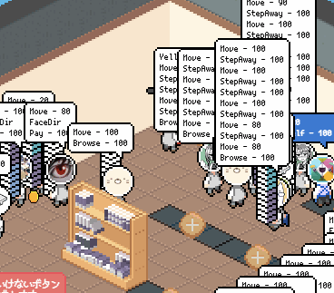
This is what the objective queues look like during a congestion.
This messy and buggy implementation inadvertently recreates the chaotic and irrational nature of human behaviour. 混雑になると目的キューはこうなる
このおかしくてバグってる実装は割と人間のカオスに近い
This messy and buggy implementation inadvertently recreates the chaotic and irrational nature of human behaviour. 混雑になると目的キューはこうなる
このおかしくてバグってる実装は割と人間のカオスに近い

Continuous failures to fulfill an objective reduces a hidden "energy" value.
When depleted, the customer goes home. This (mostly...) prevents the simulation from getting stuck. ひたすら目的に失敗するとエネルギーの値が減る。
エネルギーがなくなったら、客さんは帰る。これは、だいたい、シミュレーションの無限ループを避ける。
When depleted, the customer goes home. This (mostly...) prevents the simulation from getting stuck. ひたすら目的に失敗するとエネルギーの値が減る。
エネルギーがなくなったら、客さんは帰る。これは、だいたい、シミュレーションの無限ループを避ける。
Graphics
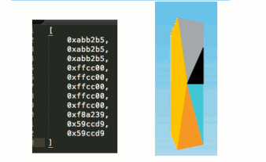
Bookshelf colors
shelf colors are generated by drawing and masking onto a template spritesheet
色塗りは本棚のテンプレートスプライトに、ステンシルを使ってペイントされる
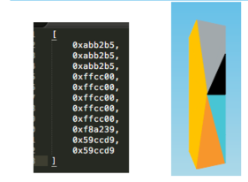
based on the categories of books in a shelf, a "pie" of colors are drawn, with each color proportionate to the number of books of each category
本棚に乗ってる本の種類によって、色グラフ見たいな色選択が行う
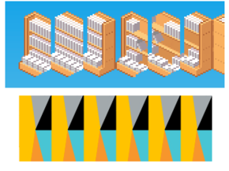
the color "pie" is then repeated and tiled over the spritesheet
そのグラフはリピートされスプライトシートにタイリングされる
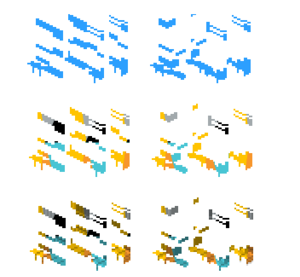
a mask is then applied, followed by overlaying the shading layer over it
ステンシルでマスクしてから影エフェクトを乗せる
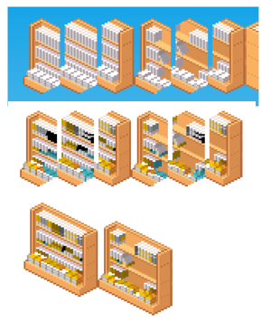
the colors sheet is then applied over the original spritesheet.
出来た色レイヤーは最初のスプライトシートにペイントされる
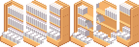
Hold on, why does the spritesheet look like this?
Why split it this way? ちょっと待って、なぜスプライトシートはこうなってる
なぜこの切り方をやっている
Why split it this way? ちょっと待って、なぜスプライトシートはこうなってる
なぜこの切り方をやっている
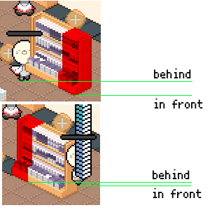
Answer: Depth calculation.
If the bookshelf is a single sprite, and we set the anchor at the red part of the sprite... this happens それは、奥行き計算
もし本棚が単体のスプライトとアンカーがこの赤い部分に指定したら・・・こうなる
If the bookshelf is a single sprite, and we set the anchor at the red part of the sprite... this happens それは、奥行き計算
もし本棚が単体のスプライトとアンカーがこの赤い部分に指定したら・・・こうなる
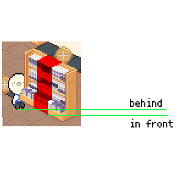
Setting the anchor to the middle doesn't help either
アンカーを真ん中に設定しても役に立たない
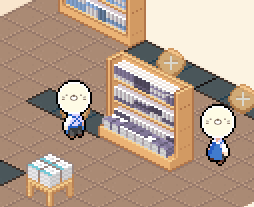
They had to be split into separate 1-tile parts, each with their own anchor
みんな自分のアンカーを持って１タイルパーツに分ける必要があった。
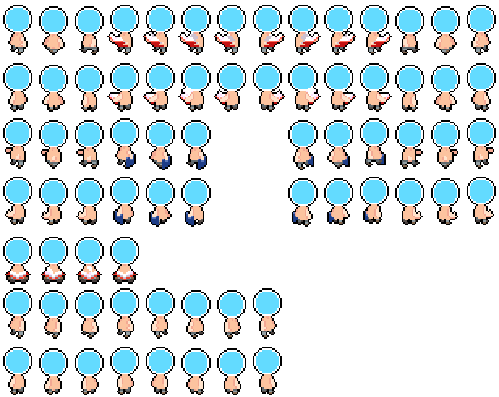
Spritesheet for the customers
(they're naked!) 客さんのスプライトシート
（裸だ）
(they're naked!) 客さんのスプライトシート
（裸だ）
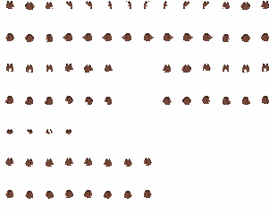
Clothes are on a different spritesheet
(can be colored in canvas on the fly) 服装は別のシートにある
（キャンバスで色塗りできる）
(can be colored in canvas on the fly) 服装は別のシートにある
（キャンバスで色塗りできる）
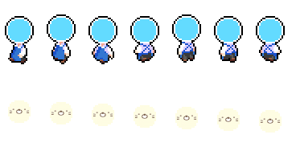
The face is actually generated as its own separate spritesheet
Why does it have multiple frames, gradually descending? 顔は別のスプライトシートで作る
なぜ下げてゆく複数のフレームがある？
Why does it have multiple frames, gradually descending? 顔は別のスプライトシートで作る
なぜ下げてゆく複数のフレームがある？
It's positioned to match the face of the character and has its own set of corresponding animations to match the face's vertical position.
キャラクターの顔の位置と一致するように調整されている。

Before this optimization, a complete spritesheet was generated for every single character. This used up a LOT of memory. Sorry!
In the beginning, I never expected to have more than 10 characters on screen.
🙇🏻 この最適化した前、各キャラは自分の個別スプライトシートを持ってって、メモリーをすごく使ってしまった。ごめん！
最初は１０キャラ以上が同時に画面に出るのは想定しなかった
🙇🏻
In the beginning, I never expected to have more than 10 characters on screen.
🙇🏻 この最適化した前、各キャラは自分の個別スプライトシートを持ってって、メモリーをすごく使ってしまった。ごめん！
最初は１０キャラ以上が同時に画面に出るのは想定しなかった
🙇🏻
Audio
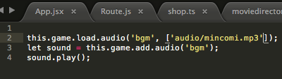
The game has no sound effects or any sound programming at all, just the BGM.
ゲームにBGM以外の音がない
Accidental Features
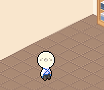
Usually, features are requested by the members of the team.
The desired appearance and behaviour of the feature is explained in detail to allow implementation accurate to specifications. 普通は、ティームメンバーが機能を申し込む
機能のスペック、見た目、挙動は決めてからスペック通り実装する。
The desired appearance and behaviour of the feature is explained in detail to allow implementation accurate to specifications. 普通は、ティームメンバーが機能を申し込む
機能のスペック、見た目、挙動は決めてからスペック通り実装する。
However, sometimes things are implemented without being asked for.
だが、たまに頼まれなくても実現される機能がある。
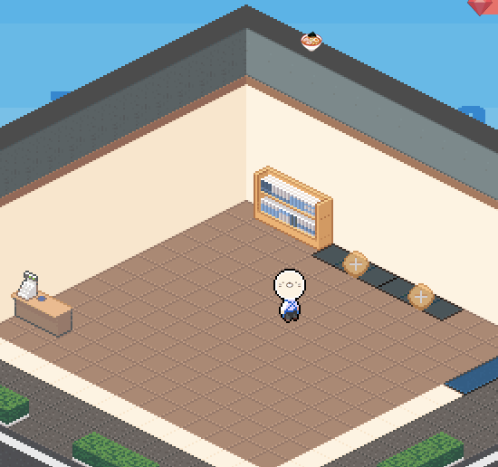
Animation of furnitures and walls falling from the sky, floor tiles falling into the abyss was meant to test the isometric depth calculation, but was kept because the team liked the look.
家具と壁が空から落ちるアニメーションは奥行き計算をテストするためだったが、ティームはかっこいいだと思ったから入れた
The book tower was never specified. It was a test for dynamically assembling and generating a spritesheet on the fly. It looked funny and silly and became a core gameplay mechanic.
本の山盛りはスペックされてなかった。ただのスプライトシート生成のテストだった。けど面白いのでゲームのギミックになった。
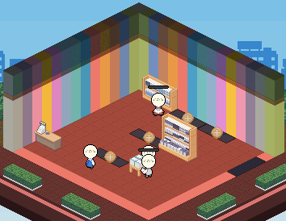
The fever mode animation took 15 minutes to write and was meant for testing how tinting affected performance.
フィーバーモードのアニメーションは色合いのベンチマークだった
Development Showcase
(Random and arbitrary milestones)
Video clips captured during development to show development progress to the team for feedback and/or confirmation.
開発中に撮った動画、進行報告やただ見せるためなもの
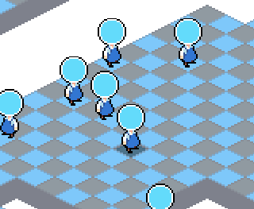
2016/11/02
pathfinding library easystarjs integrated 2016/11/02
easystarjsライブラリー
pathfinding library easystarjs integrated 2016/11/02
easystarjsライブラリー
2016/11/02
pathfinding library easystarjs integrated 2016/11/02
easystarjsライブラリー
pathfinding library easystarjs integrated 2016/11/02
easystarjsライブラリー
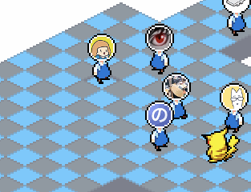
2016/11/04
avatars embedded 2016/11/04
アバターを入れる
avatars embedded 2016/11/04
アバターを入れる
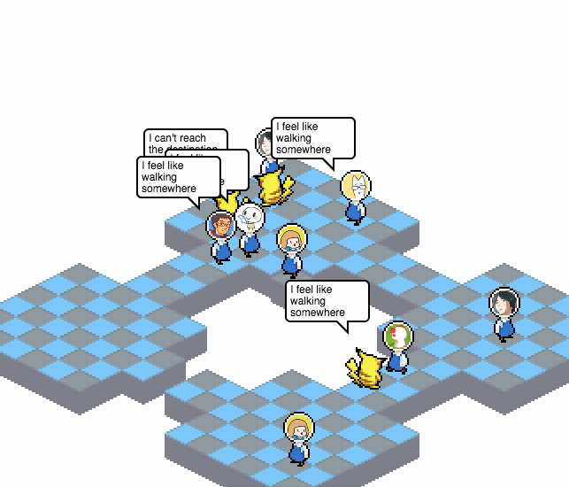
2016/11/04
they talk! 2016/11/04
喋る！
they talk! 2016/11/04
喋る！
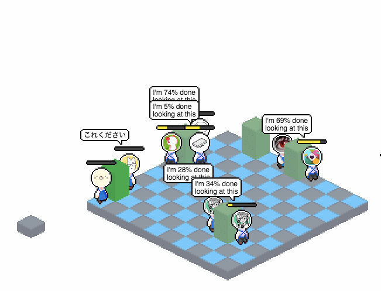
2016/11/09
shop boundaries
shelf entities
they read and pay 2016/11/09
店の領域
棚
読める、払ってる
shop boundaries
shelf entities
they read and pay 2016/11/09
店の領域
棚
読める、払ってる
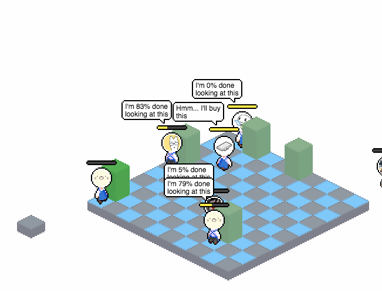
2016/11/09
shop boundaries
shelf entities
they read and pay 2016/11/09
店の領域
棚
読める、払ってる
shop boundaries
shelf entities
they read and pay 2016/11/09
店の領域
棚
読める、払ってる
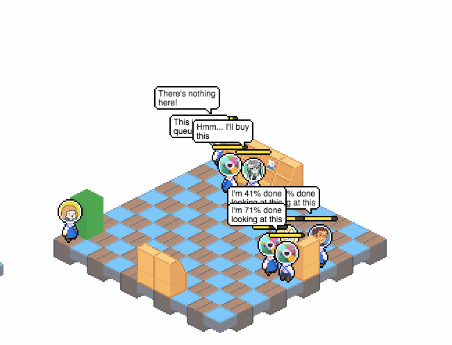
2016/11/10
more sprites 2016/11/10
増えるスプライト
more sprites 2016/11/10
増えるスプライト
2016/11/11
even more sprites 2016/11/11
さらに増えるスプライト
even more sprites 2016/11/11
さらに増えるスプライト

2016/11/11
even more sprites
money is displayed 2016/11/11
もっとさらに増えるスプライト
お金が見える
even more sprites
money is displayed 2016/11/11
もっとさらに増えるスプライト
お金が見える
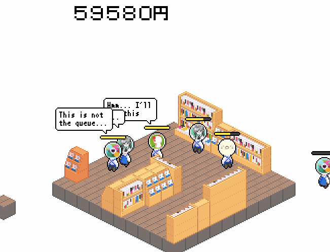
2016/11/11
staff walks around and needs to be called back to the cash register 2016/11/11
店員さんが歩いて、レジに呼ばれる
staff walks around and needs to be called back to the cash register 2016/11/11
店員さんが歩いて、レジに呼ばれる
2016/11/17
reading animation is added 2016/11/17
読書アニメーション追加
reading animation is added 2016/11/17
読書アニメーション追加
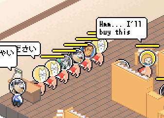
2016/11/17
customers get their own sprites 2016/11/17
客さんが自分のスプライトをもらう
customers get their own sprites 2016/11/17
客さんが自分のスプライトをもらう
2016/11/17
they learned how to cut in line 2016/11/17
横入り出来るようになった
they learned how to cut in line 2016/11/17
横入り出来るようになった
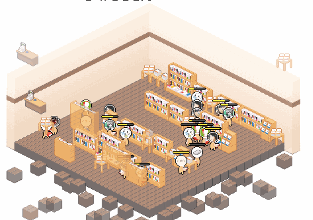
2016/11/18
world size manipulation 2016/11/18
ワールドサイズ操作
world size manipulation 2016/11/18
ワールドサイズ操作
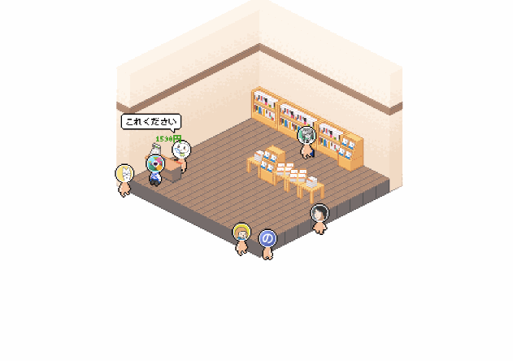
2016/11/18
world size manipulation 2016/11/18
ワールドサイズ操作
world size manipulation 2016/11/18
ワールドサイズ操作
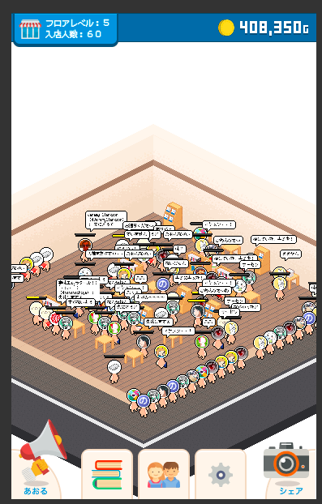
2016/11/30
game and UI come together 2016/11/30
ゲームとUI
game and UI come together 2016/11/30
ゲームとUI
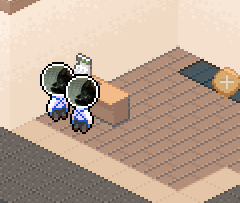
2016/12/01
multiple staff AI is introduced 2016/12/01
複数の店員
multiple staff AI is introduced 2016/12/01
複数の店員
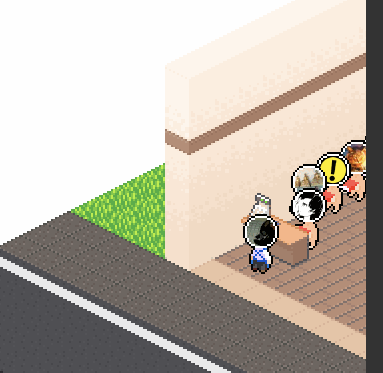
2016/12/02
test 2016/12/02
テスト
test 2016/12/02
テスト
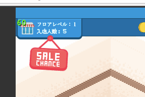
2016/12/05
more gameplay mechanics begin to be introduced 2016/12/05
ギミックの導入
more gameplay mechanics begin to be introduced 2016/12/05
ギミックの導入
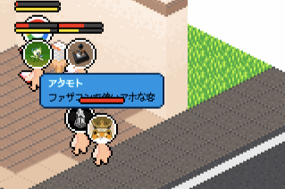
2016/12/06
internal energy mechanic is being tested 2016/12/06
エネルギー機能のテスト
internal energy mechanic is being tested 2016/12/06
エネルギー機能のテスト
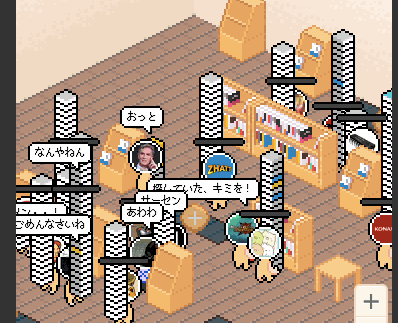
2016/12/09
work started to pile up... 2016/12/09
仕事が増えてきた
work started to pile up... 2016/12/09
仕事が増えてきた
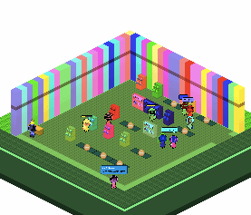
2016/12/12
test 2016/12/12
テスト
test 2016/12/12
テスト
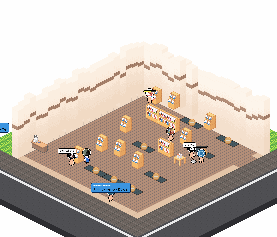
2016/12/12
test 2016/12/12
テスト
test 2016/12/12
テスト
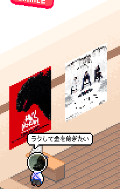
2016/12/13
posters tested 2016/12/13
ポスターのテスト
posters tested 2016/12/13
ポスターのテスト
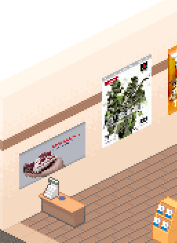
2016/12/13
posters tested 2016/12/13
ポスターのテスト
posters tested 2016/12/13
ポスターのテスト
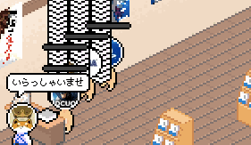
2016/12/14
animations added during checkout 2016/12/14
レジアニメーション
animations added during checkout 2016/12/14
レジアニメーション
2016/12/16
congestion issues led to desperate measures 2016/12/16
混雑問題で抜本的な対策
congestion issues led to desperate measures 2016/12/16
混雑問題で抜本的な対策
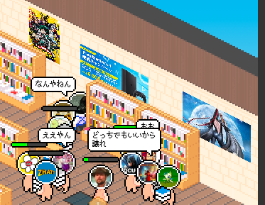
2016/12/19
high resolution posters implemented 2016/12/19
高画質ポスター
high resolution posters implemented 2016/12/19
高画質ポスター
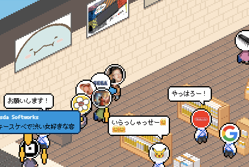
2016/12/21
more animations get added 2016/12/21
アニメーション追加
more animations get added 2016/12/21
アニメーション追加
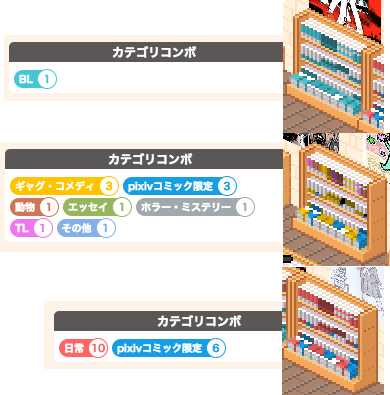
2016/12/21
bookshelf dynamic colors implemented 2016/12/21
本棚の色
bookshelf dynamic colors implemented 2016/12/21
本棚の色
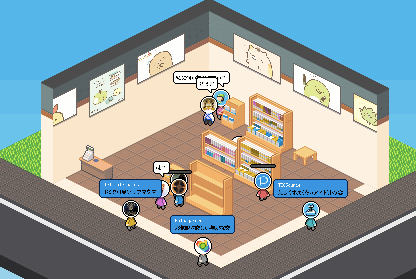
2016/12/22
more animations get added 2016/12/22
アニメーション追加
more animations get added 2016/12/22
アニメーション追加
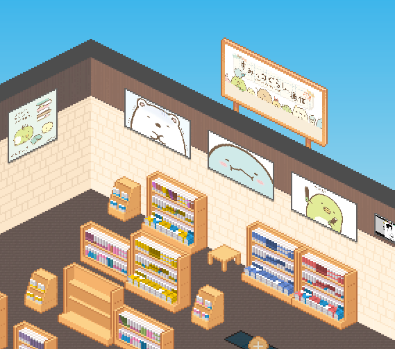
2016/12/24
kanban 2016/12/24
kanban
kanban 2016/12/24
kanban
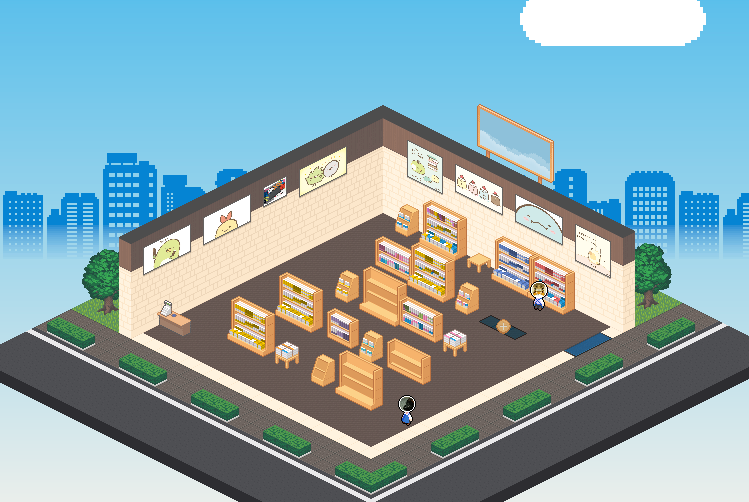
2016/12/24
trees and hedges 2016/12/24
木と生垣
trees and hedges 2016/12/24
木と生垣
2016/12/28
meteor sale 2016/12/28
メテオセール
meteor sale 2016/12/28
メテオセール
2016/12/31
last minute implementation of New Year features 2016/12/31
焦ってお正月機能の実装
last minute implementation of New Year features 2016/12/31
焦ってお正月機能の実装
2016/12/31
last minute implementation of New Year features 2016/12/31
ギリギリまでお正月仕事
last minute implementation of New Year features 2016/12/31
ギリギリまでお正月仕事
2017/01/01
holes 2017/01/01
穴
holes 2017/01/01
穴
2017/01/06
animation for ending movie 2017/01/06
エンディングのアニメーション
animation for ending movie 2017/01/06
エンディングのアニメーション
2017/01/06
sprite for ending movie 2017/01/06
エンディングのスプライト
sprite for ending movie 2017/01/06
エンディングのスプライト
2017/01/06
ojiisan 2017/01/06
ojiisan
ojiisan 2017/01/06
ojiisan